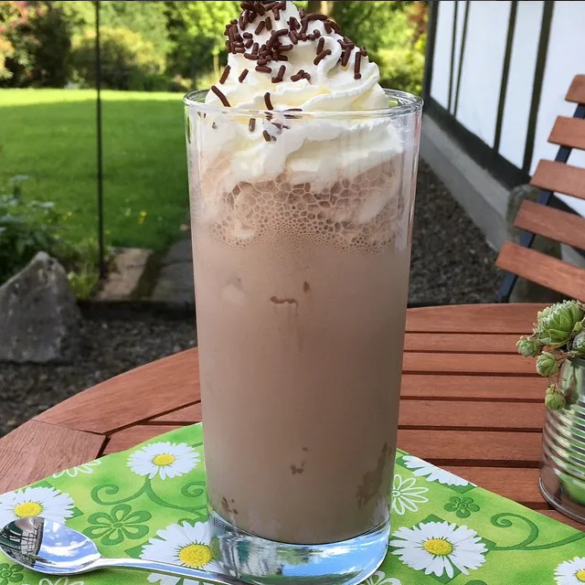

Milchshake - Schnell und erfrischend (1 Portion)
Anleitung:
- Von dem Vanilleeis ca. 2 1/2 große Esslöffel Eis in eine Schüssel geben und mit Milch aufgießen. Das Kakaopulver (es kann auch Erdbeerpulver sein, je nach gewünschter Geschmacksrichtung des Milchshakes) dazugeben und mit einem Pürierstab oder im Mixaufsatz einer Küchenmaschine kurz miteinender vermixen. Es entsteht oben eine schöne Eisschicht.
- Ins Glas eine Kugel Eis geben und mit dem Shake das Glas auffüllen.
- Tipp:
Wer mag kann noch Schlagsahne und Schokoladenstreusel oder eine Fruchtscheibe zum Verzieren drauflegen.

Zutaten:
- 2 ½ EL Eis (Vanille)
- 1 Kugeln Eis (Vanille oder Schokolade)
- 200 ml Milch
- 2 EL Kakaopulver